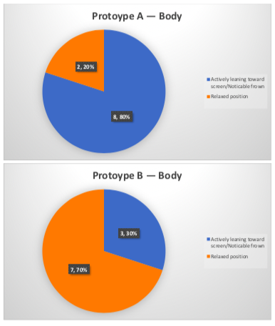
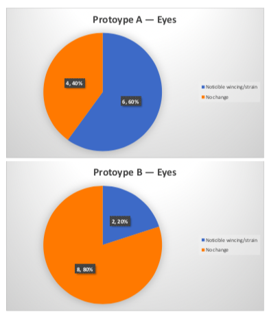

Users of the Vision website have voiced concerns about the degrading legibility of Vision articles.
Microsoft recently deployed a series of typographical changes to the default typeface across the SharePoint platform.
These changes have degraded the legibility and the accessibility of the articles. Greatly affecting the overall User Experience.
The Research Document PDF should accompany this document for your observation.
AB Testing was carried out with ten different users across the Pramerica campus in Guerrilla format. These users came from a variety of different roles within varying business units.
The test was developed to pay particular attention to body and eye movements of the user, designed to avoid this test being based purely on opinion.
2x UX Practitioners carried out user testing with one facilitating the test whilst one paid attention to body and eye movements, taking relevant notes.
The users were first asked which news/blog sites they used most often.
Body Language
Eye Movement

Interesting to note here is the difference between users verbal responses to the Microsoft implementation and our suggested implementation. There was a pattern, especially amongst users who stated that they used social media daily (Twitter, Facebook and Reddit), that although they preferred Option A, their body language suggested it was harder for them to read from a comfortable sitting position.
It’s important to remember the design intent of sites like Twitter and Facebook — that is to keep users scrolling (often towards the next advertisement). Large spaced out text would make it harder for users to skip past posts they don’t find interesting to them.
When switching from A to B some users actually switched positions in their chair, sat well back from the screen and relaxed their shoulders.
When switching from B to A some users slowly leaned forward, hunched over in there chair and held their chin. Some users actively switched from reading silently to reading aloud.
There is a case to be made that social media has made us more tolerable to less legible typography on screen.
Prototype A
Prototype B